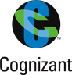

Professional Summary
Staff engineer and engineering lead with 14+ years building large-scale data platforms, distributed systems and applied-AI infrastructure on AWS, Azure and GCP. Led teams of up to 12 engineers - owning architecture end-to-end (data models, API contracts, schema evolution, SLAs), shipping platforms used by 10+ teams and running them in production (SLOs, on-call, RCA). Hands-on with Spark, Databricks, Kafka, Delta/Iceberg, Kubernetes and Python/Scala/Java/Go; now focused on LLM agent systems - RAG, orchestration and evaluation over traces, metrics and labeled datasets. Lead through written design docs; mentor engineers into tech leads.
Skills
Data Platform & Big Data: Apache Spark, Databricks, Snowflake, Kafka, Flink, Hadoop, Hive, Delta Lake, Lakehouse, Iceberg, Airflow, Data Governance, Data Modeling, Data Mesh, Data Quality & Lineage, ETL/ELT
AI, ML & Agents: LLMs, GenAI, RAG, LangChain, Agentforce, MLflow, PyTorch, TensorFlow, Model Evaluation, Prompt Engineering, NLP, Responsible AI
Cloud, Systems & DevOps: AWS, Azure, GCP, Kubernetes (EKS), Docker, Terraform, CI/CD (Jenkins), Microservices, REST & GraphQL APIs, Unix/Linux, Git
Observability & Reliability: Splunk, Grafana, Prometheus, Datadog, SLOs & On-call, Incident RCA
Programming: Python, Rust, SQL, Go, Scala, Java, C#, Bash/Shell
Leadership: 8+ years leading teams of up to 12 engineers; mentored 50+ engineers into tech leads; design docs & trade-offs; built 0-to-1 platforms used by 10+ teams; customer escalations & incident RCA
Professional Experience
Atlassian
Sep 2025 - Present
Engineering Lead, AI Partner Delivery & Data Platform (POD Lead)
- Lead a pod building the partner data & AI layer on Atlassian's central Databricks/Spark lakehouse - own the architecture, data models and API contracts with platform, product and GTM teams
- Stood up AI-ready infrastructure for GenAI/agent delivery: RAG pipelines, LLM & agent evaluation (traces, metrics, labeled test sets) and CI/CD rollout gates
- Extended the platform only where partner data needed it (SQL semantic models, Neo4j graph for partner relationships); upstream gaps go to platform owners as written design asks
- Scope highest-value use cases with partners & data consumers; mentor engineers via design reviews
Salesforce
Jul 2022 - Aug 2025
Staff Engineer, Agentforce & Sales AI Platform (POD Lead)
- Drove GenAI/Agentforce adoption into the Sales AI stack - shipped multi-turn LLM agent workflows (RAG, prompt/context engineering, guardrails) with an offline/online evaluation harness; ~25-40% performance gains
- Architected the data platform behind it on AWS - Spark on EKS/Kubernetes, Kafka streaming, Airflow batch - with resource tuning that cut latency ~70%
- Built self-service developer tooling and IaC (Terraform, Jenkins CI/CD) that cut deployment time ~50% and let other teams onboard without waiting on us
- Owned production reliability: SLOs, alerting and log analysis (Grafana/Splunk/Datadog), on-call, incident RCA and preventive fixes; mentored engineers to senior/lead
Apple Inc.
Jun 2020 - Jul 2022
Technical Lead & Module Owner, Supply-Chain Analytics Platform
- Led a 12-engineer team [DC-CPT] building an enterprise supply-chain analytics platform on AWS to GA - 100GB+/day, 99.9% SLA; owned roadmap, execution, testing and rollout plans
- Built real-time (Kafka, 1M+ msgs/hr) and batch (Spark) pipelines with shared data-quality & lineage checks
- Led on-prem to AWS migration to a Data Mesh - domain-owned data, central governance, access control & privacy safeguards; ~30% cost cut, ~200% scale
- Defined schema contracts, versioning and governance standards so data models evolved without breaking 10+ downstream analytics teams served via data APIs and semantic models
- Hired, coached and grew engineers into tech leads; partnered cross-functionally with operations, finance and platform-owner teams - gaps went upstream as written asks
Qualcomm
Nov 2017 - May 2020
Senior Engineer, ML & Distributed Systems
- Architected a distributed processing platform handling 20TB+/day on a multi-PB Hadoop estate (Spark, Hive, MapR-DB, YARN scheduling & resource management)
- Built ML training & evaluation pipelines (TensorFlow/PyTorch) reaching 92% model accuracy; profiled and tuned training workloads, cutting infrastructure usage 25%
- Implemented data-quality & monitoring frameworks for reliable training datasets; Airflow orchestration & transformation frameworks lifted pipeline efficiency 35%
- Enabled self-service access to 15+ data products for engineering & analytics teams; ranked Top-3 ML worldwide
Advisory Analyst, Azure Cloud SME
- Led 6-member team shipping a multi-region Azure data platform ahead of schedule; customer-facing cloud SME
- Migrated 500GB+ data with 99.9% integrity (Azure Data Factory, Service Bus); established data-quality checks, SLAs, IaC automation and compliance frameworks across regions
Senior Developer / Consultant
- Architected a BI platform with OLTP/OLAP optimizations querying billion+ rows in ~2-5s; delivered dashboards & visualizations for Sales and Finance stakeholders
- Built ETL pipelines (50M+ rows/day); data modeling & schema versioning improved data consistency ~40%
- STAR Performer for data platform excellence; multiple client appreciation awards

Cognizant
Apr 2012 - Oct 2014
Application Developer
- 24x7 production support & incident RCA for MetLife backend (Unix/Linux, SQL); automation cut manual effort 60%
Education, Certifications & Awards
Master's in Data Science & Engineering - BITS, Pilani, India - with Distinction
Bachelor's in Computer Science & Engineering - W.B.U.T., Kolkata, India - with Distinction
Certifications: Microsoft Certified Professional; IBM Certified Professional
Awards: Atlassian multiple Spot Recognitions; Salesforce Hackathon Winner; Apple Supply-Chain Recognition; Qualcomm Innovation Maestro Winner; Qualcomm Top 3 ML Model Worldwide; Qualcomm HaQkathon Winner; Qualcomm Super-Qualstar & Qualstars; PwC STAR Performer & Spot Awards